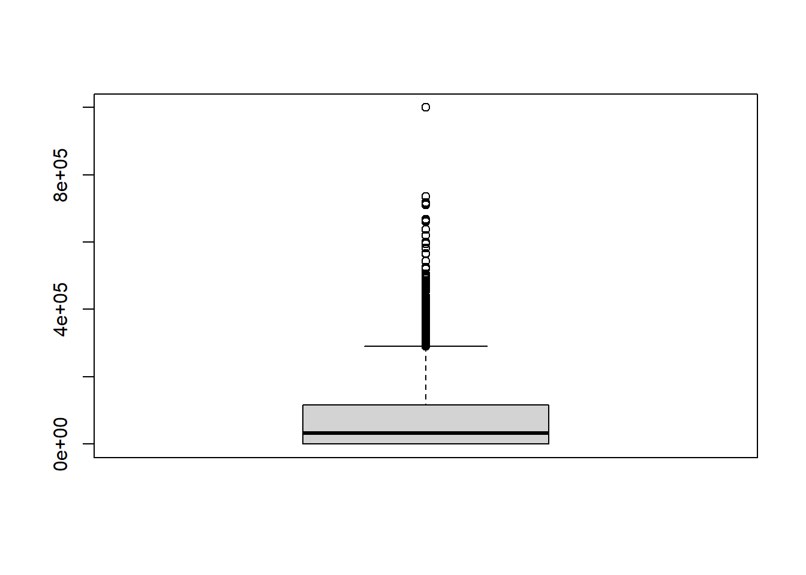
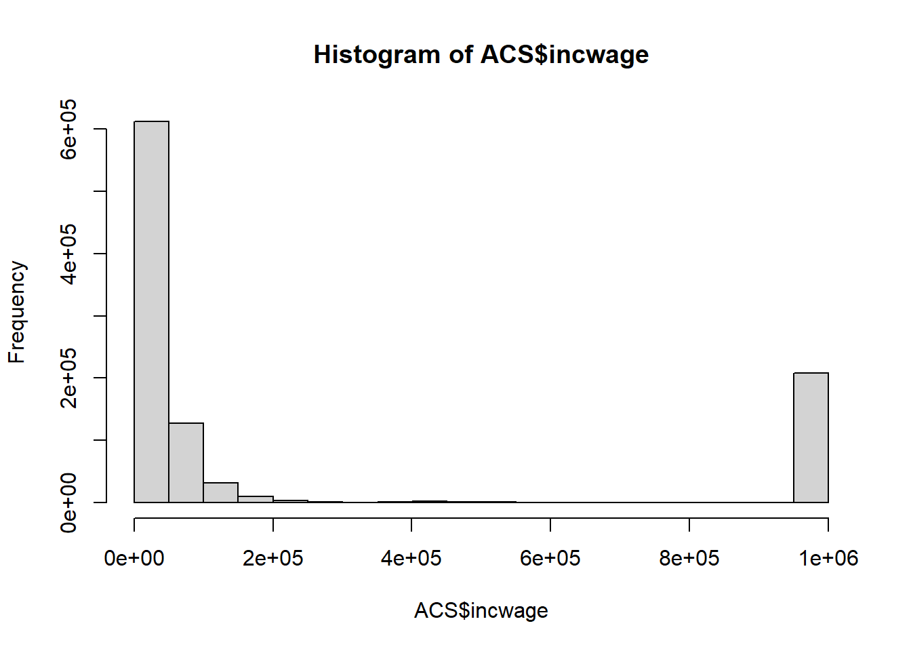
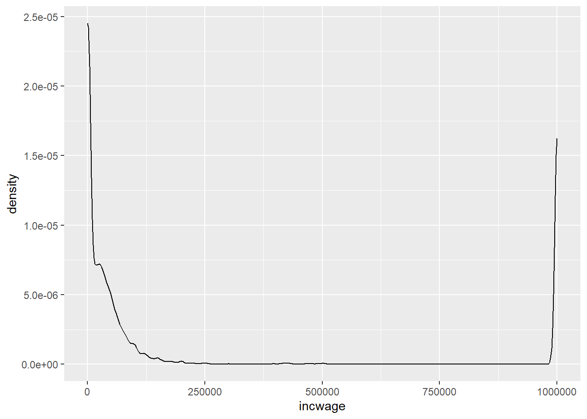
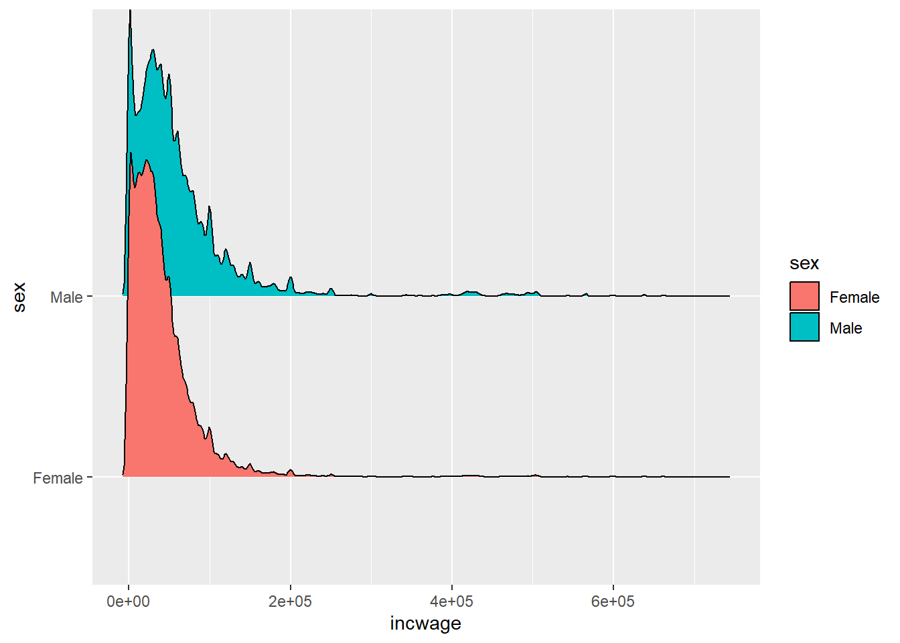
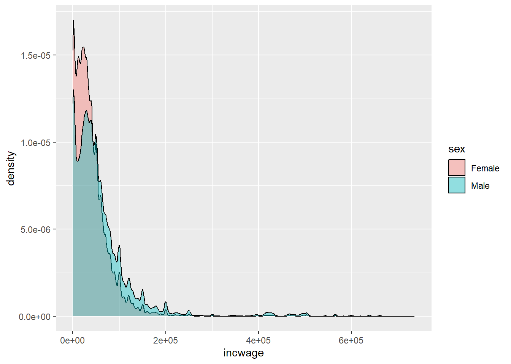
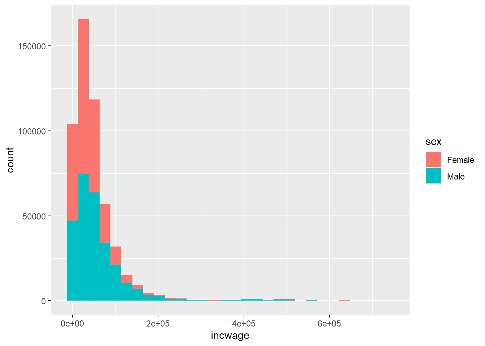

rm(list=ls())Assignment 4: Foundational Statistics
First things First
Group Work
You may complete this assignment by yourself, or if you want, in a group of up to two people. Sometimes, people learn to write and debug code better together, so make it a goal to learn from each other if you want to work in a group. If you do work with someone, type both of your names under author in the metadata section above. When submitting, you should each submit your own .HTML and .qmd files. I want to make sure that each student can run the code and render on their own laptops (with their own working directory, of course).
Other Instructions
Instructions: As you work through each of the following questions, make sure to write the answers in write space (text) and any code should go in the gray space. For questions requiring type written answers, I have space dedicated to it as “Answer:”.
Prior to doing this assignment, please set up your working directory in the below setup chunk and make sure to remove the first hashtag:
Also, make sure to render periodically to make sure any updated code works well!
Question 1
Clear your global environment (the memory of your data frames and other objects) by using the function rm(list=ls()).
Question 2
Set your working directory in the first chunk of code to point to the data set ACS.csv. Then import ACS.csv here and name the data frame “ACS”. Write the proper code.
ACS = read.csv("ACS.csv")Question 3
There is no real question here. Just information about the data set!
The data is from the American Community Survey and is (nearly) a representative sample of the US population from 2016-2018. Each row is one person. The relevant variables are:
- year: The year the sample is from.
- perwt: Person weight to create a representative sample (We won’t know what this is until later)
- sex: Male or Female age: the age in years for the person
- marst: Marital Status
- fertyr: Person had a baby in the past year race: race of the person (i.e., White, Asian, Black)
- hispan: the person is of Hispanic descent
- educ: highest education achieved
- empstat: employment status
- uhrswork: usual hours worked per week in past year
- incwage: annual income and wages total
Question 4
Use the modelsummary() package and datasummary_skim() function to summarize all the numeric/integer data in ACS, then all the categorical data. In class, we initially did so with numeric data, then I showed you how to do so by adding the “type =”categorical” option.
Answer:Yes! I used library ‘modelsummary’ and got the summary for both numeric and categorical using the following command lines datasummary_skim(ACS) datasummary_skim(ACS, type = “categorical”)
library(modelsummary)Warning: package 'modelsummary' was built under R version 4.3.2datasummary_skim(ACS)| Unique (#) | Missing (%) | Mean | SD | Min | Median | Max | ||
|---|---|---|---|---|---|---|---|---|
| year | 3 | 0 | 2017.0 | 0.8 | 2016.0 | 2017.0 | 2018.0 | ![]() |
| perwt | 1079 | 0 | 106.2 | 85.9 | 1.0 | 83.0 | 1889.0 | ![]() |
| incwage | 989 | 0 | 235251.6 | 394802.3 | 0.0 | 32000.0 | 999999.0 | ![]() |
datasummary_skim(ACS, type = "categorical")Warning: These variables were omitted because they include more than 50 levels:
age, uhrswork.| N | % | ||
|---|---|---|---|
| sex | Female | 499893 | 50.0 |
| Male | 500107 | 50.0 | |
| marst | Divorced | 84567 | 8.5 |
| Married, spouse absent | 17343 | 1.7 | |
| Married, spouse present | 395786 | 39.6 | |
| Never married/single | 460845 | 46.1 | |
| Separated | 15018 | 1.5 | |
| Widowed | 26441 | 2.6 | |
| fertyr | N/A | 753276 | 75.3 |
| No | 233561 | 23.4 | |
| Yes | 13163 | 1.3 | |
| race | American Indian or Alaska Native | 12138 | 1.2 |
| Black/African American/Negro | 103214 | 10.3 | |
| Chinese | 14315 | 1.4 | |
| Japanese | 2370 | 0.2 | |
| Other Asian or Pacific Islander | 42313 | 4.2 | |
| Other race, nec | 42952 | 4.3 | |
| Three or more major races | 4193 | 0.4 | |
| Two major races | 29831 | 3.0 | |
| White | 748674 | 74.9 | |
| hispan | Cuban | 6189 | 0.6 |
| Mexican | 101382 | 10.1 | |
| Not Hispanic | 839880 | 84.0 | |
| Other | 37566 | 3.8 | |
| Puerto Rican | 14983 | 1.5 | |
| educ | 1 year of college | 118263 | 11.8 |
| 2 years of college | 66923 | 6.7 | |
| 4 years of college | 149478 | 14.9 | |
| 5+ years of college | 88434 | 8.8 | |
| Grade 10 | 25066 | 2.5 | |
| Grade 11 | 28415 | 2.8 | |
| Grade 12 | 272663 | 27.3 | |
| Grade 5, 6, 7, or 8 | 72444 | 7.2 | |
| Grade 9 | 23215 | 2.3 | |
| N/A or no schooling | 68164 | 6.8 | |
| Nursery school to grade 4 | 86935 | 8.7 | |
| empstat | Employed | 520207 | 52.0 |
| N/A | 207637 | 20.8 | |
| Not in labor force | 245214 | 24.5 | |
| Unemployed | 26942 | 2.7 |
Question 5
From the previous question, what is the mean of the “incwage” variable? Does this make sense to you and why or why not? Now, check the distribution of incwage using either a histogram, boxplot, and/or density distribution. Is there anything peculiar about the incwage variable and examining its distribution?
Answer: Incwage, defined by the data dictionary is the “annual income and wages total”. I think the boxplot shows it best, how there are outliers that are shifting the data to the right.
library("ggplot2")
datasummary_skim(ACS$incwage)| Unique (#) | Missing (%) | Mean | SD | Min | Median | Max | ||
|---|---|---|---|---|---|---|---|---|
| data | 989 | 0 | 235251.6 | 394802.3 | 0.0 | 32000.0 | 999999.0 | |
boxplot(ACS$incwage)
hist(ACS$incwage)
ggplot(ACS, aes(x=incwage)) +
geom_density() 
Question 6
When we run regressions, we usually say “Regress [Y] on [X]” or Regression [Y] on [X’s].” Do the following:
Question 6a.
- Change age to an integer variable.
Question 6b.
- Regress incwage on age.
Question 6c.
- Interpret the age coefficient properly.
Answer: For each additional year in age, wage decreases by $12,989 on average all else held constant.
Question 6d.
- Does the coefficient for age make sense to you? Why or why not?
Answer: this does not make sense to me because the older you are the more money you’re likely to make.
ACS$age = as.integer(ACS$age)Warning: NAs introduced by coercion#ggplot(ACS, aes(x = incwage,y=age)) + geom_point()
reg6b = lm(incwage~age, data=ACS)
summary(reg6b)
Call:
lm(formula = incwage ~ age, data = ACS)
Residuals:
Min 1Q Median 3Q Max
-498529 -234669 4095 202891 1037698
Coefficients:
Estimate Std. Error t value Pr(>|t|)
(Intercept) 706357.7 586.8 1203.7 <2e-16 ***
age -12989.3 13.9 -934.7 <2e-16 ***
---
Signif. codes: 0 '***' 0.001 '**' 0.01 '*' 0.05 '.' 0.1 ' ' 1
Residual standard error: 283100 on 988541 degrees of freedom
(11457 observations deleted due to missingness)
Multiple R-squared: 0.4692, Adjusted R-squared: 0.4692
F-statistic: 8.737e+05 on 1 and 988541 DF, p-value: < 2.2e-16Question 7
Using the skills we used and/or learned in previous courses/sessions, do the following:
Question 7a.
- Check the frequency table for the empstat variable. What are the categories (levels) in the empstat variable?
Answer: The categorical levels in empstat are, Employed, N/A, Not in labor force, and Unemployed.
datasummary_skim(ACS$empstat, type = "categorical")| data | N | % |
|---|---|---|
| Employed | 520207 | 52.0 |
| N/A | 207637 | 20.8 |
| Not in labor force | 245214 | 24.5 |
| Unemployed | 26942 | 2.7 |
Question 7b.
Subset the data only for those who were either employed or unemployed. Use the following code:
ACS_subset <- ACS[ACS\(empstat == "Unemployed" | ACS\)empstat == “Employed”,]
Note that this is just a variation of what we saw in terms of slicing and dicing data in Session 3. Note that “|” means “or”. An “&” mean “and”. So here, we are asking for the ACS data frame to be subsetted to only rows that have employed or unemployed people. In the future, I expect you to be able to write similar code, so make sure you understand it!
ACS_empstat <- ACS[ACS$empstat == "Unemployed" | ACS$empstat == "Employed",]Question 7c.
Then, create a binary variable called “employed” in the ACS_empstat data frame, defining an employed person as 1 and an unemployed person as 0 within the ACS_subset data. We used the ifelse() function in class to do this! It tends to be good practice to check if your dummy was created correctly - you can check it with a frequency table or just examine the data frame.
ACS_empstat$employed = ifelse(ACS_empstat$empstat == "Employed", 1, 0)Question 8
Regress incwage on the employed dummy variable using the ACS_empstat data frame.
Answer the following:
reg8 = lm(incwage~employed, data=ACS_empstat)
summary(reg8)
Call:
lm(formula = incwage ~ employed, data = ACS_empstat)
Residuals:
Min 1Q Median 3Q Max
-51607 -33407 -11607 11393 703754
Coefficients:
Estimate Std. Error t value Pr(>|t|)
(Intercept) 10245.9 381.0 26.89 <2e-16 ***
employed 41361.3 390.7 105.86 <2e-16 ***
---
Signif. codes: 0 '***' 0.001 '**' 0.01 '*' 0.05 '.' 0.1 ' ' 1
Residual standard error: 62540 on 547147 degrees of freedom
Multiple R-squared: 0.02007, Adjusted R-squared: 0.02007
F-statistic: 1.121e+04 on 1 and 547147 DF, p-value: < 2.2e-16Question 8a.
How much does an unemployed person make, on average, according to the data? If you need it, use R as a calculator so I can see your calculations.
Answer: On average a person that is employed will make $51,607.25 dollars.
mean(ACS_empstat[ACS_empstat$employed == '1', 'incwage'])[1] 51607.25Question 8b.
Interpret the employed coefficient properly (as we did in class).
Answer: For each person that is employed on average their income will increase by 41,361.3 all else held constant.
Question 8c.
Do the coefficients from 9a and 9b make sense to you? Why or why not? Contrast this with what you find in Q4, Q5, and Q6, where you used the ACS data frame instead of the ACS_subset data frame. What might be happening?
Answer: This makes no sense because according to the data on average the person who does not answer the question, of whether they are employed or not, will increase income wage by $997,991.48 dollars.
Question 9
Question 9a
Now, take the entire ACS data (it should still be in your global environment if you did not clear it). Subset the data only for those who were either “N/A” or “Not in Labor Force” in the empstat variable. You should be able to copy the code previously used and amend it. Call this subset “ACS_NA”.
ACS_NA <- ACS[ACS$empstat == "N/A" | ACS$empstat == "Not in labor force",]Question 9b
Then, create a binary variable called “emp_NA” in the ACS_NA data frame, defining an “N/A” as 1 and a “Not in Labor Force” person as 0 within the ACS_NA data. Again, we used the ifelse() function in class to do this! It tends to be good practice to check if your dummy was created correctly - you can check it with a frequency table or just examine the data frame.
ACS_NA$emp_NA = ifelse(ACS_NA$empstat == "N/A", 1, 0)Question 9c
Now, regress incwage on emp_NA using the ACS_NA data frame. How much income/wages, on average, does someone listed as “N/A” in the empstat variable make? Note that it should not make sense to you in the context of actual wages in the US (which you can search for online if you need to do so).
Answer: Using the following line of code ‘mean(ACS_NA[ACS_NA$emp_NA == ’1’, ‘incwage’])’ I was able to determine that someone listed as ‘N/A’ made $999,999 dollars.
reg9c <- lm(incwage~emp_NA, data=ACS_NA)
summary(reg9c)
Call:
lm(formula = incwage ~ emp_NA, data = ACS_NA)
Residuals:
Min 1Q Median 3Q Max
-2008 -2008 0 0 715992
Coefficients:
Estimate Std. Error t value Pr(>|t|)
(Intercept) 2007.52 20.45 98.19 <2e-16 ***
emp_NA 997991.48 30.19 33051.55 <2e-16 ***
---
Signif. codes: 0 '***' 0.001 '**' 0.01 '*' 0.05 '.' 0.1 ' ' 1
Residual standard error: 10120 on 452849 degrees of freedom
Multiple R-squared: 0.9996, Adjusted R-squared: 0.9996
F-statistic: 1.092e+09 on 1 and 452849 DF, p-value: < 2.2e-16mean(ACS_NA[ACS_NA$emp_NA == '1', 'incwage'])[1] 999999Question 10
Question 10a
You figured out an issue with those whose employment status is “N/A”. Now subset the original ACS data such that only those who are employed (empstat==“Employed”) are in the data frame. Call this new data frame ACS_employed.
ACS_employed = ACS[ACS$empstat == "Employed",]Question 10b
Now, we are interested in the conditional distribution of income by a person’s sex. Using ACS_employed, plot the conditional distributions by gender either as density plots, histograms, and/or bogplots using ggplot(). There are multiple ways you can do this, so feel free to do so in such a way that you can start to describe the differences in incwage between working males and females in the US. Then, describe the differences you see across sex.
Answer:Yes! so the difference I see between Male and Female is that female sex is earning more then men. Although this doesn’t show if there are more females than males, it only shows that females are earning more.
library("ggplot2")
library("ggridges")Warning: package 'ggridges' was built under R version 4.3.2ggplot(ACS_employed, aes(x=incwage, y =sex, fill=sex)) +
geom_density_ridges()Picking joint bandwidth of 2610
ggplot(ACS_employed, aes(x=incwage, fill=sex)) +
geom_density(alpha=0.4)
ggplot(ACS_employed, aes(x=incwage, fill=sex)) + geom_histogram() `stat_bin()` using `bins = 30`. Pick better value with `binwidth`.